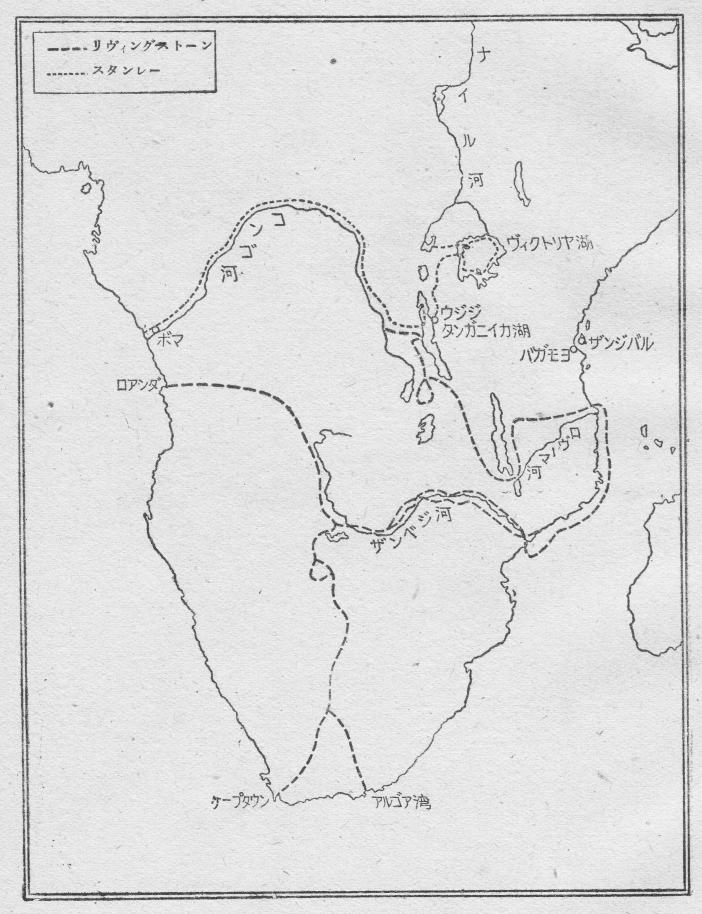

世界で最も古い文化の一つは、アフリカ北海岸の一部のエジプトに開けました。また、近代文化の源となつてゐるギリシャやローマの文化は、アフリカの北海岸一帯にその光をなげかけました。その後、世界文化の中心は、西ヨーロッパに移つたやうな有様になりましたが、その西ヨーロッパから、アフリカはすぐ近い所にあります。
それにも拘はらず、このアフリカ大陸は、海岸地方が世に知られてゐるきりで、その内地の大部分は、まだ探検されずに残つてゐまして、地図の上でも空白になつてをり、秘密のまゝになつて、暗黒大陸と呼ばれてゐました。
この暗黒大陸を明るみに出すために、十九世紀になつてから殊に、いろいろな探検がなされましたが、奥地の方へふみこむのは容易なことではありませんでした。それにはいろいろな理由があります。
アフリカは、大部分が熱帯にありまして、そのひどい炎暑が人を苦しめます。それから、北部の広大なサハラ沙漠をはじめ、あちこちに、旅行に困難な沙漠があります。また、海岸地方や
この探検において、暗黒なアフリカ大陸の父と呼ばれてゐる人があります。
それは、ダヴィッド・リヴィングストーンであります。
リヴィングストーンは、千八百十三年に、イギリスのスコットランドに生れました。家が貧しかつたので、工場で働きながら夜学に通ひ、また熱心にいろいろな書物を読みました。それから、医学の勉強をし、次に、宣教師になる修業をしました。未開の人々のために、キリスト教の伝道に生涯を捧げるつもりでゐたのです。そして遂に彼は、千八百四十年の末、暗黒大陸のアフリカへ向つて、宣教師として出発しました。
その後の彼の生涯は、もうアフリカときり離すことは出来ません。彼の第一の仕事は、アフリカの野蛮な土人たちを教化することでありました。次には、当時アフリカで盛んに行はれてゐた奴隷売買の悪風を防止することでありました。それから第三に、アフリカ内地の地理を探査することでありました。それらの立派な仕事とその気高い人格とのために、彼はアフリカの父と云はれるやうになつたのであります。
彼の功績で最も目につくのは、やはり、その探検でありまして、アフリカ探検は彼によつて非常な進歩を見ることになりました。

彼は最初、アフリカの南端に行き、それから内地へとはいつて行きました。千八百四十九年には、カラハリの大沙漠を探りました。千八百五十四年には、ザンベジ河の上流地から土人の従者を連れて、西海岸のロアンダに出ることに成功しました。それからまた内地に引返し、こんどはザンベジ河をくだつて、彼がヴィクトリア
それから彼はちよつとイギリスに帰りましたが、千八百五十八年には、またアフリカに向ひ、六年の間、東部アフリカの内地で、土人の教化をしながら、方々を探検して、たくさんの発見をしました。そして次第に、この暗黒大陸の内部の姿が明るみにもち出されることになりました。
千八百六十六年、彼はまた第三回の探検旅行のため、アフリカの東海岸のザンジバル港へやつて来ました。もう五十三歳にもなつてをりますのに、悪疫や猛獣や蛮人の住む土地に奥深く入り込まうとしたのです。そしてこんどは、ナイル河の水源地を調査するといふ特別の任務もおびてゐました。
このナイル河は、アフリカの中部から北へ流れ、エジプトの平野を通つて地中海に注いでゐる有名な大河であります。古代エジプトの文化はこの河の沿岸に起りましたし、エジプトの豊かな平野はすべてこの河に養はれてゐますし、エジプト人はこの河を父として崇拝してをりました。そしてこの河の水源は、昔からいろいろの人によつて調べられましたが、まだ明かになつてゐませんでした。数年前に、スピークの探検によつて、ヴィクトリア湖がだいたいナイル河の水源とされてゐましたが、その確実な調査はまだ出来てゐませんでした。
そこで、この地方の山脈の有様を調べ、ナイル河の水源地を探り、動植物の研究などをもするために、リヴィングストーンは、ザンジバル港の南方のロヴーマ河口へ行き、河をさかのぼつて奥地へと進みました。千八百六十六年三月末のことで、雑多な土人三十余人をひきつれてゐました。
ところが、それきりリヴィングストーンの消息は絶えてしまひました。そしてイギリスでは勿論のこと、ヨーロッパの人々が次第に心配しだしました頃、十二月の或る日、リヴィングストーン一行に加はつてゐた土人九名が、突然、ザンジバルに現はれまして、リヴィングストーンをはじめ一行の者はみな、ニヤサ湖の西方で蛮人に殺されてしまひ、自分たちは密林のなかに逃げ込んでやうやく助かつたのだと、言ひふらしました。
この話は、どうも本当らしく思はれました。けれど、イギリスの地理学協会ではそれを疑つて、ヤング大佐に調査を命じました。大佐はアフリカに来て、さまざまな苦心の末、翌年の夏、リヴィングストーン一行が生きてゐることを確かめました。彼はリヴィングストーンにめぐり逢ふことは出来ませんでしたけれども、その一行が無事であることを知り、あの土人たちは途中で脱走したのだといふことを知りました。
その後、とぎれとぎれではありますが、リヴィングストーンの消息はまた伝はつてくるやうになりました。一行の食糧は乏しく、病気になる者が多く、物品を盗んで逃亡する者も出てき、兇悪な蛮人に出逢ふこともあり、リヴィングストーン自身も幾度か病気になり、そのほかいろいろな困難のなかで、探検は続けられてゐました。彼はニヤサ湖から、タンガニイカ湖へ進み、モエロ湖やバングエオロ湖まで探りました。しかし、その長い間の艱難のために、彼の身体も次第に弱つてきまして、タンガニイカ湖の東北岸のウヂヂといふ、アラビア人の隊商が集る町まで、何度か引返さなければなりませんでした。
そのウヂヂから、千八百六十九年五月三十日に出された手紙を最後に、彼の消息は再びぱつたりととだえてしまひました。この二度目の消息不明は、大きな不安の念を与へました。イギリスをはじめヨーロッパ中にその噂はひろまり、世間の注意をひきました。いくら待つても何の消息も得られませんでした。
アフリカの父リヴィングストーン、三十年間もアフリカの暗黒と戦ひ続けてきた偉大な探検家、その人の安否が、今や全く
千八百六十九年十月、アメリカのニューヨーク・ヘラルド新聞の主幹であるベネットが、フランスのパリーに滞在してゐまして、リヴィングストーンが行方不明になつたことを聞き、捜索隊を出さうと考へました。
彼は以前からリヴィングストーンに敬服してゐまして、多くの人々がもうリヴィングストーンのことを諦めかけてゐますのに、必ずまだ生きてゐるにちがひないと信じてゐたのであります。
ところで、この捜索は容易なことではありません。ベネットはいろいろ考へました上で、スタンレーといふ社員を選ぶことにしました。
このヘンリー・モルトン・スタンレーは、千八百四十一年、イギリスのウェールズの片田舎に生れ、苦しい少年時代を過ごしてから、アメリカ通ひの汽船のボーイとなり、アメリカでスタンレーといふ商人の養子となつたのでした。
その後、南北戦争に従軍し、次には水兵となつて、実地にいろいろなことを学び、また独力で勉強もしまして、しまひには新聞記者となり、ニューヨーク・ヘラルド新聞社にはいりました。イギリスがアフリカのアビシニア討伐をはじめますと、新聞社の特派員となつてアフリカに渡り、ついで、スペインに内乱が起りますと、そこへ派遣されました。そしてスペインのマドリッドに滞在してゐます時に、パリーにゐるベネットから電報で呼びよせられたのでした。
ベネットは、スタンレーの元気な姿を見て、すぐに言ひだしました。
「実は、君もかねがね聞いてゐるだらうが、アフリカで再度行方不明になつたリヴィングストーンのことだ。僕の考へでは、リヴィングストーンはまだ生きてゐると思ふ。たとひ、死んでゐるにしても、あれほどの偉人の最期を、そのまゝにしておくといふことはない。そこで、リヴィングストーンの捜索隊を出さうと思ふのだが、この隊長の役目を君に引受けて貰ひたいのだ。君ならきつとやれると思ふ。費用はいくらでも出すから、ひとつ骨折つてみてくれないか。」
スタンレーはしばらく考へてから、答へました。
「お引受けしませう。」
そこで、ベネットは万事をスタンレーに任せることにしました。
スタンレーは深く決心しました。そしてひそかに、アフリカ内地のことを出来るだけ調べあげ、なほ、アフリカ旅行の経験のある人々の話を聞いたりして、いよいよ千八百七十一年一月に、アフリカ東海岸のザンジバル港へやつて来ました。
こゝで彼は非常な苦心をして、捜索探検隊を組織しました。その中には、二人の白人がをり、通訳もをり、また嘗てスピークの探検に同行して、ナイル河の水源地附近を旅したことのある五人の土人もをりました。必要な品物としては、食糧、炊事用具、テント、小舟、衣服、毛布など。次に土人の
かくて、この一隊は総勢百九十二人で、五組に分れて順次にアフリカの内地へ向つて進みました。
ところで、リヴィングストーンがどこにどうしてゐるやら、さつぱり見当がつきませんでした。しかし、最後の便りがウヂヂから来たところをみると、そこへ行けば何かの手がかりが得られるかも知れませんので、スタンレーはまづウヂヂへ突進することにしました。
この旅行は困難をきはめました。まだ雨期が去らなかつたので、谷川の水はあふれ、あちこちに沼沢をつくつてゐました。毒蟻や毒蜂やその他の虫が、昼となく夜となく一行をなやましました。マラリヤにかゝる者も多くなりました。スタンレーもその病気にかゝつて、高熱のために意識がぼんやりしたこともしばしばでした。馬や驢馬も斃れるものが出てきました。そして、行けども行けども荒野と沼と密林で、獅子や鰐にも出あひます。道は少しもはかどりませんでした。
バガモヨの海岸から出立したのが三月二十一日のことで、それから数ヶ月の間に、逃亡する者や病死する者が相次いで出てきて、僅かに五十六人となつてしまひました。白人の一人は病死し、他の一人は衰弱してもう進めませんので、人夫にかつがれて途中から引返しました。
道程の七分目あたり、ウニヤンエンベの部落まできますと、その先でアラビア人と黒人との間にはげしい戦が起つてゐて、通行は危険となりました。スタンレーはその部落に多くの荷物を残しておき、遠いまはり道をして、密林の中をわけて進みました。心細い困難な旅で、一行のうちの元気な者も次第に気力がくじけてきました。
しかし、困難が増せば増すほど、スタンレーの決心は固くなりました。リヴィングストーンを捜し出すことは、もう新聞社の仕事ではなく、彼自身の心からの仕事となり、一身に担つてゐる使命と思はれるのでした。あくまで突進しようと彼は自身にかたく誓ひました。
幸ひなことに、彼のその決心に答へるかのやうに、アラビア商人の一隊から、嬉しい手がかりが得られました。ウヂヂに一人の白人がゐたといふのです。
その白人こそ、おそらくリヴィングストーンにちがひありません。スタンレーは急に闇夜に光明を見出したやうな心地で、一同を励ましながら進みました。
十一月十日、川にそつてくだり、丘の上に出ますと、向うに、湖水が見えました。タンガニイカ湖です。なほ進むと、すぐ目の下に、ウヂヂの町が現はれました。一行は歓声をあげました。スタンレーは到着を祝つて、小銃で空砲を打たせました。
一行が町にはいると、銃声に驚いてゐる土人たちが、騒ぎたちながら集つてきました。その中の一人が、スタンレーに近づいてきて、「今日は、」と英語で言ひました。スタンレーは驚き、また喜んで、よく尋ねてみますと、その男こそ、リヴィングストーンに長い間仕へてゐる忠僕で、スーシといふ者でありました。
スーシは狂気のやうにかけ出して行きました。スタンレーはその後をおひました。やがて、そこに一人の白人の姿が見えました。
その人は、背が高くやせてゐて、疲れてゐるやうでした。金モールをまいた帽子をかぶり、その下から白い髪の毛が見えてをり、赤い上衣を着、灰色のズボンをつけてゐました。まさしくリヴィングストーンにちがひありません。
スタンレーは走りよらうとしましたが、大勢の土人が立ち並んでゐるのにちよつと気後れがし、また、無礼なことをしてはならないと思ひ、静かに進んでいつて帽子をぬぎました。
「リヴィングストーン博士ではありませんか。」
その声は感動に震へました。
相手の人はかすかに
「さうです。」
スタンレーは帽子をかぶり、相手が帽子から手を放すのをまつて、その手を強く握りしめて叫びました。
「あなたにお会ひすることが出来たのを、私は神に感謝します。」
リヴィングストーンはそれに答へました。
「私も、こゝにあなたをお迎へすることになつたのを、深く感謝します。」
それは、慎しみ深い雄々しい会見で、如何なる身振や叫び声にも増した深い感激のこもつたものでありました。
ウヂヂは中央アフリカでも早くから開けた町で、一方にはアラビア人が住み、他方には土人が住んでゐます。附近からさまざまな商品が集まつてきて、その交易は賑やかです。タンガニイカ湖岸には、土人の丸木舟がたくさんつないであります。
こゝの狭くるしい家のなかで、リヴィングストーンとスタンレーとは、互ひにしみじみと長い間語りあつたのでした。スタンレーは、まづ捜索の旅に出た次第を話し、リヴィングストーンは、長い間の探検旅行のいろいろな出来事を話しました。
リヴィングストーンがなめた艱難辛苦は、言葉にもつくせぬものがありました。ニヤサ湖附近の地勢を調べてから、タンガニイカ湖の南岸にたどりつくまでには、絶食同様の日々を過ごしたこともありましたし、雨の中でほとんど一行全員が病気になつたこともありました。何よりも困つたのは、変心した従者が薬品の箱を持ち逃げしたことでした。しかし、彼はなほ探検の旅を続け、モエロ湖やバングエオロ湖などの附近一帯を調査しました。そのうちに彼は肺を病み、血痰を吐くほどになりました。そしてアラビアの商人に助けられ、人の背におぶさつたり、担架に乗つたりして進みました。静養のためウヂヂに来ますと、ザンジバルから送られてゐた必需品は、もう大かた盗まれてしまつてゐました。彼は少しく健康を回復しますと、また探検の旅に出で、ナイル河水源地帯を実地に調査しようとしましたが、また病気に冒され、衰弱がひどくなりました。その上、
リヴィングストーンの消息が絶えてしまつたのは、手紙を託されたアラビア人が、その手紙をみな途中で棄てゝしまつたからだといふことが後でわかりました。
リヴィングストーンの悲痛な話をきゝながら、スタンレーは、これまで嘗ておぼえたことのないほどの感動に打たれ、リヴィングストーンの偉大な人格にすつかり感服しました。
そして心の底からリヴィングストーンに結び付けられたスタンレーは、数日休養するともう、リヴィングストーンを助けて、タンガニイカ湖北端の探検へと出かけたのであります。
二人は土人の
アフリカの中部奥地に細長く南北に横たはつてゐるこの大湖水は、地理学上たいへん興味深いものでありますが、その風景の美しさもまた格別であります。巨大な樹木と深緑の草に蔽はれた山が湖岸まで裾をひき、絶壁をそばだたせ、
これほどの華麗な風景を、スタンレーは嘗て見たことがありませんでした。三十年間アフリカの大自然に親しんだリヴィングストーンでさへ、幾度か感歎の声をあげました。
湖水には豊富に魚がゐて、土人たちはほとんど漁を仕事としてゐます。湖岸の平地には、果樹が植ゑられ、
日を重ねて北へ進むと、湖岸の土人は次第に
アフリカの内地では、旅行者は、たいていの部落で、一種の通行税として贈物を要求されますし、また物品交易が要求されます。金銭はいつさい役にたちません。それ故、食糧やその他の品物は、旅行者にとつては最も大切なもので、その使用については、人員や日程からわり出してくはしい予定をたてねばなりませんし、もしそれを狂はせると、怖ろしい羽目に陥ることがあります。
ところが、土人たちは狡猾でかけ引きが強く、そのうへ時間のことなどは頭にないので、贈物にしても交易にしても、その交渉がのろのろと長びいて、容易にまとまりません。
さういふ場合、リヴィングストーンは実に悠長にかまへて、少しも
ムクングといふ部落に行きますと、土人は贈物として綿布を要求しましたが、その贈物の分量が決定したのは日没後のことでした。すると土人は、その返礼の贈物を、もう日が暮れたからと言つてごまかさうとしました。リヴィングストーンはにこにこ笑ひながら、羊をよこさないかと言ひました。そしてやうやく
新鮮な仔羊の肉は、久しぶりの御馳走でした。一同は酒盛りをする気持になつて、甘いがごく強い棕櫚酒をもしたゝか飲みました。
その夜、リヴィングストーンの忠僕のスーシと、スタンレーの従僕のボンベイとが、丸木舟の見張りをすることになつてゐましたが、二人とも棕櫚酒に酔つぱらつて、ぐつすり眠つてしまひました。そして夜が明けてみると、丸木舟の中はさんざんに荒されてゐました。
盗まれた品物を調べてみますと、水深計の糸、五百発ばかりの弾薬ケース、九十発ばかりの小銃弾、麦粉一袋、砂糖の
この盗難に、スタンレーは腹をたてましたが、リヴィングストーンは平然としてゐました。一行の丸木舟は北へ北へと進みました。
怖ろしい鰐は大河の河口附近にしかゐないことがわかりました。土人の丸木舟の群が悠々と浮んでゐることもありました。湖岸には釣をしたり、網をうつたりしてゐる漁夫もゐました。水にはいつて遊んでゐる子供を、棕櫚の木蔭から
ビカリといふところの部落の土人は、強慾で非道だといふ評判でしたが、夕方その沖を通りかゝると、果して土人等が岸に出て来て、舟をつけろと叫んだり、石を投げつけたりしました。スタンレーは鉄砲をぶつ放してやらうと思つて、リヴィングストーンの顔色をうかがひましたが、リヴィングストーンは無言のうちに不同意を示しました。
その先の方に、屏風のやうな岩の陰に入江を見つけて、そこに露営するため上陸しました。そしてコーヒーの支度をしてゐますと、夕暮に数人の土人が忍びよつて来て、一行の案内人にぐづぐづ話しかけながら、様子をさぐつて立ち去つてゆきました。しばらくすると、また数人の土人がやつて来、次にまた第三の数人がやつて来ては、同じやうなことをして立ち去りました。
いかにも怪しいことでした。土人の風習では、暗くなりかけてから訪問をするといふことはないものですし、夜中に他の小屋のほとりをうろつくのは、害心があるのだとされてゐます。それで、三度にわたる訪問は、襲撃の前の偵察にちがひないと考へられました。
それにまたもや、第四回目の数人がやつてきて、同じ事を繰返してゆきました。
もう猶予はなりませんでした。ちやうど晩飯も終つたところでしたから、一同は急いで丸木舟に乗り込み、沖へ漕ぎ出しました。
危いところでした。岩の上や砂洲の上に、続々と怪しい人影が立ち現はれました。部落中の者をかり集めて
スタンレーは彼等に銃弾を見舞はうと思つて、リヴィングストーンの顔色をうかがひましたが、その時もまた、平和と愛との高潔な心情を読みとつたのでした。
次のマガラといふ部落の土人は、リヴィングストーンの心情に応ずるかのやうに、たいへん温厚でした。
一行は、その部落のそばにテントを張つて休みました。やがて多くの土人が集つてきて、珍らしさうに眺めて、立ち去りましたが、その中にゐた一人が、午後になると、きらびやかに着飾つて、多くの従者をつれてやつて来ました。それが酋長で、威儀を正して公式の訪問に来たのです。
こゝでは、品物の贈答も礼儀正しくなされました。
その先の部落では、隣の部落との間に戦争が行はれてゐました。実にのろのろとした戦争でした。一方が奇襲をして、家畜数頭を掠奪したり、人間を一二人殺したりして引揚げますと、こんどは他の一方が、数日或は数十日後に機会を見て奇襲し、だいたい同じやうなことをして引揚げます。そしてそれが繰返し続けられます。さういふのがアフリカ土人の間の普通の戦争で、堂々と大襲撃をやつて激戦するといふことは、極めて稀であります。
そののろのろとした戦争をしてゐる部落へ、リヴィングストーンの一行はやつて行きました。そして槍や棍棒や斧などを持つてゐる土人にとり囲まれましたが、やがて、酋長から親切に待遇されました。
その頃、スタンレーは熱病にかゝつて、頭がわれるやうな痛みと、身体のやりばのないやうなけだるさとのうちに、意識もぼんやりしてゐましたけれども、しじゆうリヴィングストーンの姿がそば近くに見えましたし、その手が熱い額や手足にふれてくれるのを感じました。その慈父のやうなやさしい慰めと介抱とに対して、スタンレーは感謝の涙にくれました。
それから一行は、遂にタンガニイカ湖の北端に達しました。
そこの部落の酋長ルヒンガは、いつも穏かな微笑をたゝへてゐる老人で、もう百歳になると自分で言つてゐました。彼はその辺の地理にたいへんくはしく、いろいろなことをリヴィングストーン達に教へてくれました。
リヴィングストーンの考へでは、タンガニイカ湖の北端に続いてゐるルシジといふ河が、或はナイル河の上流となつてゐるのではあるまいかといふことでした。もしさうだとすれば、ナイル河の水源は、ヴィクトリア湖よりも、更に南方のタンガニイカ湖となる筈でした。しかし、このルシジ河が湖水へ続いてゐるあたりは、縦横にわかれてゐる無数の小さな流れの集りであつて、河全体として湖水から流れ出てゐるものやら、または湖水に流れ込んでゐるものやら、さつぱりわかりませんでした。
酋長ルヒンガの言ふところによりますと、ルシジ河はタンガニイカ湖に流れ込んでゐるのであり、ルシジ河の源は、キヴーといふ小さな湖水であるとのことでした。
リヴィングストーンとスタンレーは、それを実地に調査してみました。そして、ルヒンガの言つたことが正しいとわかりました。ルシジ河はまさしくタンガニイカ湖へ流れ込んだのであり、したがつてまた、ナイル河の水源ではありませんでした。
リヴィングストーンの予想ははづれました。しかし、こんどの探検の目的は充分に達せられました。その上、美しいタンガニイカ湖の
一行は、十二月十一日、無事にウヂヂへ帰りつきました。
ウヂヂには、幾つもの手紙や電報がスタンレーを待つてゐました。ザンジバルのアメリカ領事から廻送してきたものでした。そしてスタンレーは、リヴィングストーン捜索の目的を果したからには、ひとまづヨーロッパへ帰つて行かねばなりませんでした。
ところで、リヴィングストーンはどうしたものでせうか。スタンレーはリヴィングストーンに会つてから間もなく、将来のことについて相談しました。リヴィングストーンはもう数人の従者だけしかをらず、物資も僅かしかありませんでした。それらのものは、スタンレーの力で補ふとしましても、リヴィングストーン自身の健康は、これ以上、たうてい探検を続けられさうもありませんでした。それで、一時帰国して静養し、充分に健康を回復してから再挙されるやうにとスタンレーは切に勧めました。
しかし、リヴィングストーンは承知しませんでした。ナイル河の水源をはつきり探査するまでは、たとひ死んでも帰国しないと固い決心を示しました。
そこでスタンレーは、次の考案をもち出しました。それは、リヴィングストーンを護衛してウニヤンエンベの部落まで行くといふのです。そこには、スタンレーがウヂヂへやつて来る途中、いろいろな物品や銃器や小舟やテントなどを残してきてゐます。それをみなリヴィングストーンに提供し、スタンレーは大急ぎで海岸まで出て、五六十人の従僕をやとひ、食糧その他の必要品を持つて来させよう。それにまたウニヤンエンベの部落は、ウヂヂよりも文化的に開けてゐて、静養にも便利にちがひないのです。
この考へには、リヴィングストーンも喜んで賛成しました。タンガニイカ湖北端への探検は、いはゞ二人の記念の旅でした。
予定はきまつてゐます。ウヂヂで数日休んでから、十二月十七日、スタンレーはリヴィングストーンを護衛しながら出発し、来た時と同じ困難な道を、五十日余りかゝつて、ウニヤンエンベの部落へ着きました。不幸なことには、スタンレーが預けておいた荷物は、大かた盗まれてしまつてゐました。しかし、もつと悲しいことは、月日が早く過ぎてゆき、スタンレーはもうリヴィングストーンと別れなければならなくなりました。
二人の間は友情といふよりも師弟のやうな愛情で結ばれてゐました。スタンレーはこの時三十一歳、リヴィングストーンは五十九歳になつてゐました。そしてこの老探検家の高潔な人格は、この若い新聞記者に深い影響を与へてゐました。
三月十四日にスタンレーは出発することになりました。その前の晩になつても、リヴィングストーンはスタンレーを引止めたいやうな様子でした。スタンレーも長く居残つてゐたい思ひでしたが、海岸へ出てリヴィングストーンの探検隊をとゝのへてやるといふ重大な任務のことを考へました。探検はいつでも出来るが、人の体力や生命には限りがあります。リヴィングストーンが一応帰国するのを承知しないのも、その事を考へてゐたからでありませうか。悲痛な感慨のうちによくも眠れない夜は、早くも明けかゝりました。もう荷物は戸外に持ち出され、忙しく出発の準備がされてゐました。朝食の食卓についても、スタンレーは胸がいつぱいで、何にも食べたくありませんでした。リヴィングストーンも食慾がないやうでした。
出発の予定は五時でしたが、心残りがしてぐづぐづしてゐるうちに、もう八時になりました。スタンレーが思ひきつて立ち上ると、リヴィングストーンも立ち上りました。
「少しお送りしよう。」
「有難う。さあみんな、出かけようか。」
一同は旗を先にたてゝ出かけました。暫くして振返ると、今まで住んでゐた家、そしてリヴィングストーンが居残る家は、林のなかに淋しくたつてゐます。それもやがて小さくなり、見えなくなりました。周囲の丘陵は思ひ出の深いものばかりです。従者等は歌をうたひだしました。スタンレーはリヴィングストーンと並んで、ゆつくり歩きながら言ひました。
「あなたの遠大な計画は、私にはわかりませんが、ナイル河の水源をはつきり探るまでは、帰国しないおつもりでせう。しかし、あなたが満足された時には、本国へ帰つて、皆を喜ばせてやつて下さいよ。」
「全くその通りだ。」
そしてリヴィングストーンは、探検の予定をいろいろ話しました。
「まあ一年半はかゝるだらう。」
「それでは、予定が狂ふ場合のことも考へて、人夫たちは、此処へ到着の日から向う二年間といふことにして、雇つておきませう。」
「それはたいへん結構だ。」
「では、これでお別れしませう。神は、これまで常にあなたを助けて下すつたやうに、今後もあなたを助けて、安全に故国へ導いて下さるでせう。」
「君たちも、神が安全に帰して下さるでせう。さよなら。」
「さよなら。」
二人はかたく握手をしました。スタンレーは、張りつめてゐる気持が
そしてスタンレーはウニヤンエンベの部落を後にして、困難な道を一同を励ましながら、五月六日に、海岸のバガモヨに到着しました。
バガモヨでは、イギリスの地理学協会から派遣された捜索隊が、出発の準備をしてゐる最中でした。しかし彼等は、リヴィングストーンの消息をスタンレーから聞いただけで、旅の困難を怖れてか、内地へ向ふのを中止しました。
そこでスタンレーは、一人の老練なアラビア人を雇つて先導とし、五十七人の人夫に必要な物資をかつがせ、五月二十日にバガモヨを出発させて、自分の任務を果しました。
その後、スタンレーは便船を得て、ヨーロッパへ帰りました。彼が伝へた話は世人を驚かし、はじめのうち、信用しない人が多かつたほどでした。
リヴィングストーンはウニヤンエンベの部落に残つて、ひたすら次の探検の準備にかゝりました。その間にも、附近の地理や動植物を調べました。また土人の教化にもつとめました。それから、奴隷廃止を世界の人々に向つて力説する大論文を書いて、ニューヨーク・ヘラルド新聞に送りました。
そのうちに、スタンレーがバガモヨから仕立てゝくれた一隊が、八月十四日に到着しました。大探検の計画はもうたつてゐます。最後の準備をして、いよいよ八月二十五日に出発しました。目的はナイル河水源の調査であります。そのためにはまづ、バングエオロ湖附近にまで探査を進める予定でした。
リヴィングストーンの健康はもう回復し、用意も充分でした。しかし、旅は困難をきはめました。乾ききつた燃えるやうに暑い密林にさしかゝつて、その中を十日間も進んだ時には、リヴィングストーンをはじめ、一行の多くは熱病にかゝりました。
それでも、十月八日にはタンガニイカ湖に出ました。そして、東岸に沿つて南へ進みましたが、困苦はますます甚だしくなりました。長年曳きつれてゐた一頭の驢馬は、毒蜂におそはれて死にました。道案内人を雇へば、意地の悪いことをして食糧が得られないやうな所へ一行を引き込みました。
十二月になるともう雨期にはいつて、日夜しとしとと降りつゞけ、到るところ泥田のやうでした。この雨のために、天文の観測も地勢の測定も出来なくなりました。
バングエオロ湖に注いでゐるチャンベジ河のほとりで、森の中に珍らしい花が咲き乱れてゐるのに出逢ひました。そのいろいろな色と香りとは一行を少なからず慰めてくれました。
しかし、この地方では土人がひどく狡猾でした。ある部落では、物品と食糧との交易を承諾しておきながら、なかなか実行してくれず、三週間もだらだらと交渉が長びきました。そこで河の向うへ渡らうとすると、交易の品物は充分に取つておいて、小舟を一隻しか出してくれません。その時ばかりはリヴィングストーンも癇癪を起して、部落へ小銃弾をいつせいに浴びせかけて土人を追ひはらひ、三隻の小舟を奪つて向う岸へ渡りました。
旅はなかなかはかどりませんでした。もう年を越して四月の頃になると、リヴィングストーンの健康はひどく衰へ、腸出血を起して驢馬に乗ることも出来ず、担架にのつて進みました。いくぶん元気づいては、また驢馬に乗つてみて、落馬して気を失つたこともありました。
それでも、彼は常に探検のことを忘れず、附近の地勢を土人に尋ねたり、
四月二十九日の夕方、一行はバングエオロ湖南岸のチタンボといふ部落に着きました。そこの小屋の中にベッドを設けて、リヴィングストーンはその上に寝かされました。
翌朝、部落の酋長が訪れて来ましたが、リヴィングストーンはもう話をすることが出来ませんでした。一日寝たきりで、時計をそばに持つてこさせ、それからしきりに附近の地理を知りたがつてゐるやうでした。その夜の十二時頃、彼は忠僕スーシを呼んで、水と薬箱と蝋燭とを持つてくるやうに命じ、二つのコップに水をつがせました。
「よろしい、あちらへ行つてゐなさい。」と彼は言ひました。
暁に近い四時頃、彼の身近に仕へてゐた子供の従者が、スーシに告げました。
「来て下さい。亡くなられたやうです。」
スーシをはじめ数人の者が、急いで屋内にはいつてゆきました。
蝋燭の火はまだともつてゐました。リヴィングストーンはベッドに寝てはゐないで、そのそばに
一同は何か異常なものを心に感じて、黙つたまゝ佇んでゐました。そして千八百七十三年五月一日の夜明けの光がほのぼのと
この荘厳な最期をとげた偉人には、またそれにふさはしい忠僕たちがゐました。千八百六十六年にザンジバルを出てからずつと彼につき従つてゐるスーシとチューマとが、一行の中心となつて、万事について指図しました。
彼等はリヴィングストーンの遺骸を本国に送りかへすことに決定しました。そして衆人の面前で、彼の所持品を調べて一々書きとめました。それから新たに祭壇を設けて遺骸を安置し、その
一行は死体を護衛して、遙かに東海岸をさして出発しました。その困難な道程を、彼等は非常な忍耐力で続けてゆきました。
これより先、スタンレーからいろいろと伝へられたリヴィングストーンの消息は、またもやとだえてゐました。
それでイギリス本国では、東海岸と西海岸とから捜索隊を送りました。東海岸からのは、地理学協会によるカメロンの一隊でしたが、それがウニヤンエンベの部落にゐる時、スーシ等の一行と出逢ひました。カメロンは其処で死体を受取らうとしましたが、スーシ等はそれに応ぜず、どこまでも主人の死体と所持品とを護りつゞけて、遂に海岸のバガモヨまで、チタンボから九ヶ月ほどの苦しい旅を続け通しました。そのうへ、彼等はイギリス本国へまでも
リヴィングストーンの遺骸は、ザンジバル港から汽船でイギリスに運ばれ、千八百七十四年四月十八日、盛大な国葬によつて、ウェストミンスター寺院に葬られました。この時、スタンレーは悼詞を読んだのであります。
スタンレーは、リヴィングストーンの霊前に悼詞を読んで、アフリカでの生活をまざまざと思ひ浮べ、蛮地に斃れたリヴィングストーンの心情を思ひやつて、暗涙にむせびました。その霊を真に慰むるものは、盛大な葬儀でもなく、りつぱな墓標でもなく、その事業を完成することより外にはありません。スタンレーは、暗黒アフリカの開発に一身を捧げようと決心しました。
リヴィングストーンが最後に企てたのは、ナイル河水源の実地踏査でありました。この水源問題は、昔からいろいろ論議され、千八百五十八年になつて、スピークがヴィクトリア湖を探つてだいたいの解決をつけましたが、それ以上のことはまだ秘密につゝまれてゐました。
スタンレーはまづこの秘密をあばかうとしました。準備として、アフリカに関するあらゆる文書をあさり、充分の計画をたてました。その計画は大きくなり、ナイル河の水源はもとより、全大陸の地勢、気候、動植物、人種、風俗などをくはしく調べ、なほリヴィングストーンの志をついで、土人教化と奴隷売買防止にも力を尽さうとしたのです。
彼のこの企ては、イギリスのデリー・テレグラフ新聞社とアメリカのニューヨーク・ヘラルド新聞社から、充分の後援を得ました。そして参加者の申込みも無数にありましたが、スタンレーは、そのなかから同行者として僅かに三人の者を選びました。
千八百七十四年十一月十三日、彼はザンジバル港で五百五十六人の大探検隊を組織して、バガモヨからアフリカ内地にふみ込んでゆきました。初めのうちは旅行も順調にすゝみましたが、やがて雨が多くなり、道も難渋となり、病人や落伍者が次々に出てきまして、同行の白人の一人は遂に死にました。そしてこの間、兇悪な土人とも戦はねばなりませんでしたので、この旅行はなかなか容易なことではありませんでした。
かくて翌年の二月二十七日、一行はヴィクトリア湖の南岸に達しました。そこのカゲヒといふ部落で、酋長のカヅーマから賑かな接待を受けました。スタンレーもぜいたくな酒盛りをして、一行の者をねぎらひました。またこの大勢の一隊が来たことを聞きつたへて、あちこちの部落の者が物品交易に集つてきましたので、部落は忽ち盛大な市場のやうな有様になりました。
ところが、湖水の周航となると、誰もみなしりごみしました。酋長のカヅーマは酒ばかり飲んでゐて、お伴すると言ひながら、酔がさめると、けろりとして湖水への案内者も出してくれません。土人たちは行くのを嫌がり、一行の人夫たちも水には意気地がありません。
土人の言ふところによると、湖水の周航には一年もかゝるさうです。なほ、湖水の岸には尾のある怖ろしい蛮人もをり、人をかみ殺す猛犬をたくさん飼つてゐる土人もをり、人間を牛や羊のやうに食ふ人種もをるといふのです。
スタンレーは仕方なく、少人数でこれを決行することにしました。彼は組立式の鉄舟を用意してゐましたので、それに乗り込み、従者のなかから十一人を選んで同行させました。そして三月八日にカゲヒから出発しました。
湖の東岸と北岸をめぐるのに、およそ一ヶ月もかゝりました。風雨の日もあれば、美しく晴れた日もありました。兇暴な土人に襲はれたこともありました。風景は非常に変化があつて面白く眺められました。熱帯植物がこんもりと茂つてゐる島が到る処にありますし、陸にはけはしい岩山がそびえ立つてゐたり、美しい樹木に蔽はれた小山がもり上つたりしてゐます。岸は岩だらけの所もあれば、森が水に浸つてゐる所もあります。奇妙な服装をしてゐる土人も見えました。また七呎の長さの
風をよけて島陰にとゞまつてゐますと、四十人ばかりの土人が大きな丸木舟に乗つて、スタンレー一行の鉄舟に近づいてきました。土人たちは槍や楯を打ちふつておどかしました。スタンレーは一同を静かにさせておいて、たゞ平然とかまへて微笑さへ浮べてゐました。土人たちはみな酒に酔つてゐるやうでした。歌をうたつたり、とんだりはねたりしました。しまひには一行の品物を珍らしさうにいぢつたり、水夫たちの身体をなでまはしたり、頭をたゝいたりしました。それでも一同がじつとがまんしてゐますと、土人の一人は石投げ器をとりあげて、非常に遠くまで石を投げて見せました。ひどく酔つてゐる一人は、スタンレーをねらつて石を投げました。石はスタンレーの頭の上をすれすれに飛んでゆきました。
いくらおとなしくしてゐてもきりがありませんので、スタンレーは
北西岸のウガンダ王国の港につきますと、赤や黒や白の衣を美しく着飾つた群集に迎へられました。旗がひるがへり、太鼓が鳴り、数百発の礼砲がひゞきました。そして国王のムテサから使者が来て、スタンレーはその案内で、賓客としての正式の謁見を許されました。
ムテサは大勢力をもつてゐる王で、三千人の軍隊をひきゐ、とゝのつた法令でこの地方を治めてゐました。外国人を排斥せず、いろいろ文化をとり入れたがつてゐました。スタンレーはこの王に会つて、キリスト教のことを説き、この地方への伝道の基をきづきました。
湖の西岸は危険な所で、そこの土人たちは兇暴でした。或る島に上陸しますと、土人たちは親しげな様子で一行を迎へておいて、突然その舟を岸にひきあげてしまひ、物蔭から数百人の者が現はれてきて、槍や弓や
このやうに、いろいろと、処によつて土人の態度がちがひますのは、アフリカ内地での特色でありまして、旅行者にとつては、それが面白くもあれば危険でもあります。
五月六日、五十日近くかゝつて湖水の周航を終り、一行はカゲヒの部落に帰つてきました。留守の人々のうち、この蛮地の病気で、白人一人と人夫六人が死んでゐたのであります。
スタンレーはかくしてヴィクトリア湖の探検をすましました。湖の地形や広さもわかりました。湖にそゝいでゐる幾つもの河のこともわかり、殊に西方から流れ込んでゐる大きなカゲラ河こそは、ナイル河のいちばん上流だといふことが明かとなりました。
スタンレーは、更に附近の探検を続け、ウガンダのムテサ王に頼んで多数の護衛兵をつけてもらひ、西方のアルバート・エドワード湖を探り、附近の山脈の模様をも調べました。この探検は一年間ほどかゝり、疲れ果てた一行は、千八百七十六年五月二十七日、タンガニイカ湖畔のウヂヂにたどり着きました。
ウヂヂは、五年前の十一月に、スタンレーがはじめてリヴィングストーンに出逢つたところで、スタンレーは言ひ知れぬ感慨を覚えました。リヴィングストーンの霊がなほアフリカの地に残つてゐるやうな気がし、その霊に対して、祈りと誓ひとを繰返しました。
そしてスタンレーは、タンガニイカ湖全部を探検して、その地形や広さや深さをはかり、なほ湖に流れ入つてゐる河や、湖から流れ出てゐる河のことを、綿密に調べました。
これで、ナイル河水源の問題も解決され、その水源地附近はすつかり実地に調査されたのであります。しかし、リヴィングストーンの大きな志を